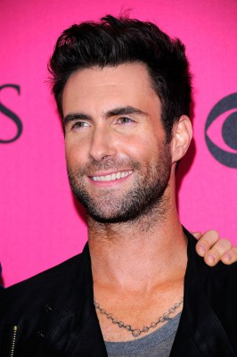
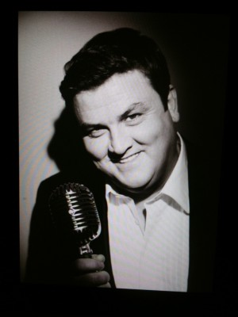

#788 Can a Song Save Your Life?
Alternativ: Begin Again
Auszeichnungen: für 1 Oscars nominiert

 IMDB-Wertung: 7.4 / 10
IMDB-Wertung: 7.4 / 10  Metascore: 62
Metascore: 62 
Die junge Musikerin Greta sucht in New York ihr Glück. Während sie an ihrer Musikkarriere arbeitet, verlässt sie ihr langjähriger Freund wegen einer erfolgversprechenden Solo-Karriere als Musiker. Für Gretta bricht eine Welt zusammen, bis sie ein Musikproduzent entdeckt.
Jahr: 2013
Dauer: 104 Minuten
FSK: 0
Land: USA Studio: Weinstein Company, TheTonspuren: DTS - ,
Untertitel:
Auflösung: 1080p (1920x1040) Größe: 5928 MB
Genre: Komödie, Drama, Musik, Liebe
Regisseur: John Carney
Drehbuch: John Carney
Soundtrack: Gregg Alexander
Darsteller:
 James Corden als Steve
James Corden als Steve Keira Knightley als Gretta
Keira Knightley als Gretta Mark Ruffalo als Dan
Mark Ruffalo als Dan Hailee Steinfeld als Violet
Hailee Steinfeld als Violet Yasiin Bey als Saul
Yasiin Bey als Saul Karen Pittman als Business Woman
Karen Pittman als Business Woman- Paul Romero als Bartender
 Catherine Keener als Miriam
Catherine Keener als Miriam- Andrew Sellon als Christian Father
-  Adam Levine als Dave
- Mary Catherine Garrison als Jill
- Jen Jacob als Dave's Fangirl
- Rob Morrow als CEO
- Shannon Walsh als Rachel
- David Abeles als Glen
- CeeLo Green als Troublegum
 Jimmy Palumbo als Guy Shouting from Window
Jimmy Palumbo als Guy Shouting from Window-  Simon Delaney als Lawyer
- Danielle Brisebois als Singer
- Nicholas Daniel Gonzalez als Zach
 Maddie Corman als Phillis
Maddie Corman als Phillis- Aya Cash als Jenny
- David Pendleton als Homeless Man
- Justin Chauncey als On Camera Musician , uncredited
 Jasmine Hope Bloch als Concert Goer , uncredited
Jasmine Hope Bloch als Concert Goer , uncredited- Sheena Colette als Band Wife , uncredited
- Alix Cross als Hipster , uncredited
- Lindsay Davis als Model , uncredited
- Mathew Dunlop als Record Executive , uncredited
- Edward Furs als Superintendent , uncredited
- Haley Ganis als Steve's Friend , uncredited
 Jaiden Kaine als A&R President , uncredited
Jaiden Kaine als A&R President , uncredited- Zivile Kaminskaite als New Yorker , uncredited
- Joe Kane als Concert Patron , uncredited
- Stacey Maltin als Young Girl , uncredited
- Dee Morris als Band Member , uncredited
 Chris Nuñez als Barfly , uncredited
Chris Nuñez als Barfly , uncredited- Niyi Oni als Florist , uncredited
- Raquel Toro als Model , uncredited
- Erika Wester als Cheering Girl , uncredited
- Ed Renninger als Barman
- Marco Assante als Marco
- Jennifer Li Jackson als Mim
- Ian Brodsky als Malcolm
- Ann McGowan als Ballet Teacher
- Ron Voz als Butler
- Kena Onyenjekwe als Rappa DD
- Harvey Morris als Phat Jimmy
- Terry Lewis als Benson
- Colin Love als Singing Basketball Player
Datei: X:\2013(A-F)\Can a Song Save Your Life (2013, FSKo.Al., 1920x1040).mkv seit 24.03.2015
Festplatte: HD 2012(N-Z)-2013(A-H)
 Es gibt insgesamt 127 Filme in der Gruppe '2013(A-F)'
Es gibt insgesamt 127 Filme in der Gruppe '2013(A-F)'